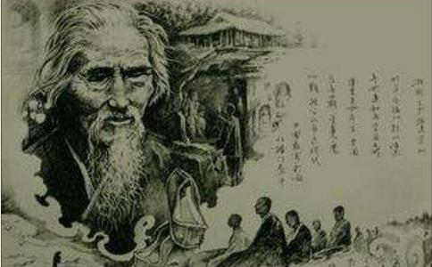

人类的
我国近年以来，享寿最长而有年谱可查的，是高僧
虚云和尚俗姓萧，名古岩，字德清，世居湖南湘乡。父玉堂，母颜氏。清道光年间，父宦游福建泉州，道光20年（公元1840年），虚云诞生后，生母病故，由庶母王氏抚育。
虚云11岁，由祖母作主，以虚云兼祧叔嗣，为定田、谭二门亲事。17岁时，父迫使完婚，但虚云早已立志从佛，虽不得已而与田、谭二氏成亲，然而同居无染，守身如一。
越二年，虚云19岁，至福州鼓山涌泉寺，礼常开法师剃度。离家时写下“皮袋歌”三章与田、谭二氏，表明不贪名利，不恋妻妾，“从今不入红尘队，降伏六根绝思虑”的超凡志向。次年，依鼓山妙莲和尚圆受具戒。
虚云31岁，行脚至浙南温州雁荡山，学教于
公元1882年，虚云43岁，发心
嗣后数年，虚云参访名山大川，三衣一钵，踽踽独行，风霜雪雨，毫无倦容。体力日强，步履轻捷。53岁起与诸师同住九华，弘教三年。
虚云自19岁
公元1895年，虚云56岁以后为度他时期，所作所为，无私
综观虚云一生事迹，可说是：志大气刚，悲深行苦，云水生涯，历尽艰辛，愈挫愈奋，建树良多，举其荦荦大者，可概括为十项：一、云水天涯，苦修证道；二、提倡戒律，整肃道风；三、中兴祖庭，建寺安僧；四、续法禅门，并弘五家；五、兼摄经教，重视文史；六、兴学育僧，迎纳新进；七、恢弘古风，农禅并重；八、护国护教，为法忘躯；九、启建法会，维护和平；十、福利社会，普度众生。
虚云和尚的修持之道 虚云和尚生于改朝换代的乱世，凭其先天的禀赋及后天的修养，志大气刚，悲深行苦，振兴
虚云自幼喜欢听祖母讲述
他维护佛教的事功，最著者为民国三十二年受国民政府林主席、蒋公及戴院长等人敦聘，至陪都重庆启建息灾法会，会后蒋公详细问法，虚云曾以书面解答，条列唯物、
民国初年，各省逐僧毁寺，当时虚云和尚在云南鸡足山的祝圣寺，新军协统李根源督兵赴诸山逐僧拆寺，虚云乃面见李根源。
根源怒形于色，厉声问：“佛教对社会有何益？”
老和尚答：“
根源面色稍改，又问：“要这泥塑木雕作什么？”
答：“佛言
根源略现笑容，又问：“但是和尚不做好事，反做许多怪事，实在是国家的废物。”
答：“和尚是通称，有圣凡之别，不能因见少数不肖僧，而遂罪及全僧，岂因一、二不肖秀才而骂
根源被老和尚说服，执弟子礼，乃引兵去。由此可知老和尚不但自己坚信佛教，而且能说服他人信仰佛教。
虚云自19岁在鼓山涌泉寺出家圆受具戒后，隐居山后岩洞中，礼万佛忏，
老和尚56岁时，过江堕水得救后，口鼻流血，容颜憔悴，乃在禅堂中打七，昼夜精勤，万念顿息，以死为待。经过二十余日，奇迹出现，容光焕发，众病皆愈。从此参禅工夫进入纯熟境界。一天，夜放晚香时，开眼一看，忽见大光明好像白昼一样，内外洞彻。至八七第三晚，六枝香开静时，护七禅师入堂冲开水，不慎将水溅在虚云手上，茶杯坠地，“啪”的一声破碎，顿断疑根，庆快平生，如从梦醒，悟透禅关，乃述二偈，以记悟境。第二偈云：
烫着手，打碎杯；家破人亡语难开；
春到花香处处秀，山河大地是如来。
公元1902年，虚云住终南山时，与戒尘法师比试坐禅工夫。戒尘趺坐不到一个时辰，
待虚云起坐后，戒尘问：“汝在定中，为有知耶？为无知耶？若有知者，不名为定；若言无知，自是枯定，所谓‘死水不藏龙’也，望明示。”
虚云道：“须知
一番弘论，至精至微，令戒尘心悦诚服，钦仰之至。二人因相与结为禅友。
虚云将禅净打成一片，其
虚云一生，不为名闻，不图利养，功成身退，不名一文。当他兴建道场完成，必选一位大德为住持，将所有财物全部移交，仅带一铲一衲，两袖清风而去。在云南鸡足山时，曾蒙逊清光绪皇帝敕赐紫金衣钵及洪法大师金印，离开时全归祝圣寺，并未随身携带。
抗日时期，国府林主席请虚云往重庆，主持四十九日护国息灾法会，林主席曾赠与“法lun常转”赤金印玺一颗，及配有金质菩提叶十二片之缨络一串，离去时悉留寺中，不将此名贵无价之宝收藏为己物。
老和尚在重兴云栖寺时，一日由昆明回寺，在途中拾得名贵首饰钱钞等物一大包，约值黄金百余两，行至寺前湖边，见一少妇投水
云门事变之翌年，老人往上海建法会，情况热烈，每日往玉佛寺等候接见者数万人，所收弟子果金，时币值三亿余元，悉数拨与四大名山、八大名刹、大小寺院256处为供养资费。
虚云曾经开示：“世人总以有财为荣，无财为苦。无财想有财，少财想多财。有了白银，又想黄金，永不会知足的。既为自己打算，又为子孙打算，一生辛苦都为钱忙，不知有钱难买子孙贤，无常一到，分文都带不去，极少能把钱财看穿的。”
虚云一生劳动不停，以身作则。当兴建云门大觉寺时，他已年逾百岁高龄，仍然抬石挑泥，处处领前。
光绪三十年，虚云56岁，住云南鸡足山钵盂庵。该庵自嘉庆年后，已无人住，因为大门外右边有一巨石白虎不祥，老和尚拟在白虎巨石处凿一
嵯峨怪石挺奇踪，苔藓犹存太古封；
天未补完留待我，云看变化欲从龙；
移山敢笑愚公拙，听法疑曾虎阜逢；
自此八风吹不动，凌霄长伴两三松。
虚云一生提倡劳动，分析其原因，约有下列数端：
（一）劳动是智慧的源泉，可以体验
（二）劳动是衣食的来源。
（三）劳动操作时，可以身心供养三宝，作为培福的基础。
（四）劳动令人心不外驰，归于寂静，以为入不思议境界养成的先导。
（五）劳动可以健身，以便努力修持，护持三宝。
（六）劳动使人体验艰苦，以养成节约惜物的习惯。
（七）劳动深合“一日不作，一日不食”的祖训。
（八）劳动的人可以任重致远，荷担如来家业。
（九）劳动时可以看话头用功，以贯彻知行合一的工夫。
虚云一生以苦行著称，尤其坚持步行，非有必要，不乘舟车，坚持“凡一日步行可达之处，不许乘坐舟车。”
如前所述，虚云43岁时，为报亲恩，尽
光绪十五年（公元1889年）虚云南行
虚云到了老年，态度略有改变，对于青年人并不坚持一定要步行访道。他说他年轻时到处游方参道，东南西北，四山五岳，乃至漂泊海外，有时一天要走几百里路。但现在形势变了，社会在发展，他不希望现在的僧人也去游方访道，这样会浪费宝贵的时光。他有一首《云游独归》绝句：
独去独归得自由，了无尘念挂心头。
从今真妄都抛却，敢谓寒山第一流。